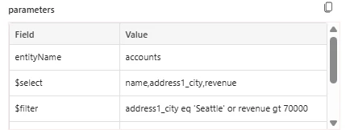

- Power Automate
- Level 2 · Working with data · 7 of 7
OData filter queries
Filter array works on data already in the flow. For data in Dataverse or SharePoint, it's far better to ask the source for only what you need: which columns, which rows, in what order, how many.
Filter at the source
WhatAn OData query in List rows (or Get items) that the server runs before sending data back.
WhyLess data, fewer actions, faster runs, and readable run history.
DemoAccounts in Seattle, or with revenue over 70,000.
Two ways to get the same rows
Without a query
List rows: every row and column
Filter array in the flow
Slow; reads everything
With OData
List rows with Filter rows and Select columns
Only matching rows, only needed columns
The query

| Box | Demo value | Meaning |
|---|---|---|
| Select columns | name,address1_city,revenue | Return only these columns |
| Filter rows | address1_city eq 'Seattle' or revenue gt 70000 | Seattle, or revenue over 70,000 |
| Sort by | revenue desc | Highest first |
| Row count | 10 | At most 10 rows |
The result, row by row
Which rows match
| Account | City | Revenue | city eq 'Seattle' | revenue gt 70000 | Returned |
|---|---|---|---|---|---|
| Contoso Ltd | Seattle | 120000 | true | true | yes |
| Northwind Traders | London | 98000 | false | true | yes |
| Tailspin Toys | London | 75000 | false | true | yes |
| Adventure Works | Seattle | 30000 | true | false | yes |
Sorted by revenue, highest first. Change or to and and only Contoso Ltd matches.

Operators
| OData | Flow equivalent | Example |
|---|---|---|
eq / ne | equals / not(equals) | statecode eq 0 (active rows) |
gt ge lt le | greater … | revenue ge 50000 |
and / or / not | and / or / not | address1_city eq 'London' and revenue gt 70000 |
contains / startswith / endswith | contains / startsWith | startswith(name, 'Contoso') |
eq null | empty() | emailaddress1 eq null |
Putting flow values in a filter
address1_city eq '@{triggerBody()?['text']}' and revenue gt @{variables('MinRevenue')}| Piece | What it does |
|---|---|
'@{...}' | Text values go inside single quotes. |
@{variables('MinRevenue')} | Numbers go without quotes. |
Watch out
- Use logical names (
address1_city), not display names. Lookups are_columnname_value. - OData uses single quotes:
name eq 'Contoso Ltd'. - List rows returns one page (up to 5,000 rows); turn on pagination when you need more (Level 5).
New to this? Start from the basics optional
OData: a standard way of writing queries that Dataverse, SharePoint and many Microsoft APIs understand.
Logical name: the internal lower-case column name, shown in the column's properties in Power Apps.
Common mistakes
- Double quotes around text values.
- Leaving Select columns empty.
- Assuming you get every row without pagination.